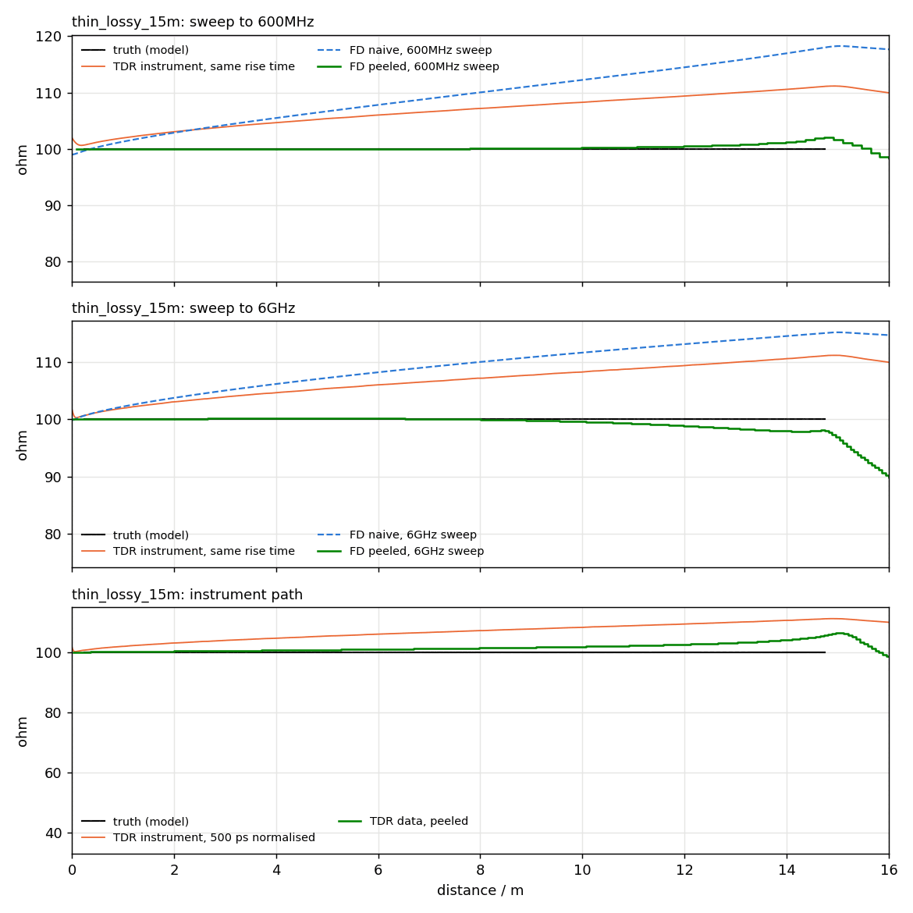
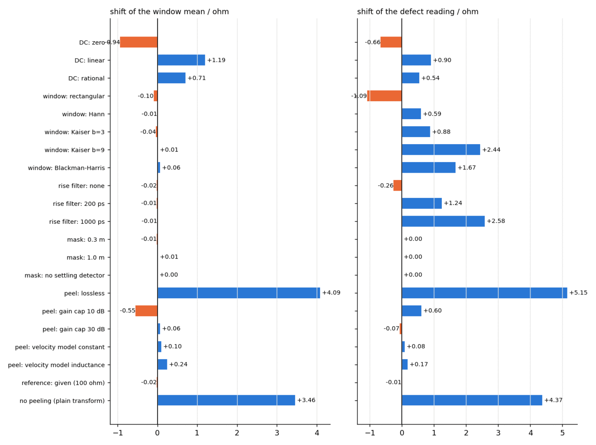

zprofile
Reconstructs a cable's impedance profile along its physical length from frequency-domain measurements.
The problem
A frequency-domain measurement says how much is wrong with a cable; it cannot say where. For a manufacturer, the difference matters enormously: "return loss fails at 391 MHz" starts an investigation, while "there is a defect 6.0 m from the near end, 0.25 Ω ripple every 26 cm on top" ends one.
The obvious tool — an inverse FFT into the time domain, as a VNA's "time-domain option" does — is quietly biased: on a lossy line the step response keeps rising as √t, so a 15 m automotive pair reads 4 to 9 Ω high by the far end. Real TDR instruments show the same slope. The instrument is not lying; the plain transform is just not the right inverse.
What was built
A reconstruction pipeline in which every processing choice is explicit, and the one that matters most — undoing loss — is an algorithm, not a correction factor.
Takes
- Differential S-parameters from cablecheck's pipeline
- The cable's physical length and, optionally, its loop resistance
- A window and bandwidth choice — with the trade-off quantified
Produces
- Characteristic impedance metre by metre along the cable
- Ripple period and amplitude — the stranding lay, made visible
- Defect position, depth and extent
- A sensitivity budget: how each choice moves each statistic
The hard part
Layer peeling walks the cable cell by cell: read the first reflection, deduce the first impedance step, remove that interface's effect from everything that follows, repeat. On a lossless line the recursion is textbook. On a real line, every later echo has been attenuated and dispersed by everything before it, so the algorithm must amplify each buried reflection by exactly the loss it suffered — and amplification of a measured signal amplifies noise with it. The reconstruction therefore regularises the inverse propagation (Wiener-style, with an adaptive read time) and corrects each cell's read against a lossy remainder — the difference between an algorithm that works on paper and one that survives −85 dB of instrument noise.
Just as important is what surrounds the algorithm: a sensitivity budget. Every processing choice — window, bandwidth, DC estimator, mask — is varied, and the shift of every reported statistic is tabulated. The result does not just say "the mean is 100.2 Ω"; it says how much of that could be the processing.

Checked against ground truth
Five synthetic reference cables with exactly known profiles, plus a simulated TDR instrument as an independent path.
| What was checked | Result |
|---|---|
| Plain transform, 15 m automotive pair | biased +4 to +9 Ω by the far end |
| Loss-aware reconstruction, same cables | within a few tenths of an ohm |
| Ripple period and amplitude | recovered once bandwidth resolves them |
| Defect position, depth and extent | recovered — position to the resolution cell |
| Simulated 35 ps TDR instrument (independent path) | same story: instrument shows the bias, reconstruction removes it |
| Deviation statistics vs nominal | implemented and reported per profile |


What it does not claim
From the report's own limitations section:
- Resolution is bandwidth-bound: features shorter than the resolved rise distance blur, stated per sweep.
- The loss model is smooth (√f + f); strongly resonant structures would need more.
- Validation is against synthetic truth and a simulated instrument — the same honest boundary as the whole toolchain.
Where it sits in the toolchain
Built directly on cablecheck's network layer — and it repaid the debt:
building this project exposed a half-cell TDR bug in the foundation, worth up to 1 Ω, now fixed and
pinned by test. labauto runs it as an analyser on every archived measurement,
and cablecheck can use it as its impedance-profile engine
(--profile-engine zprofile) when installed.